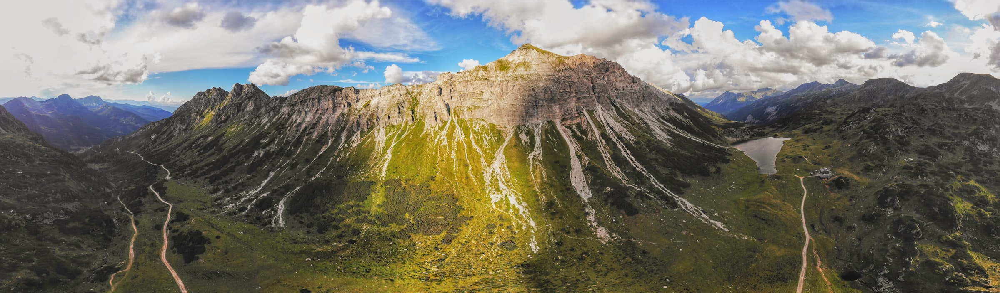
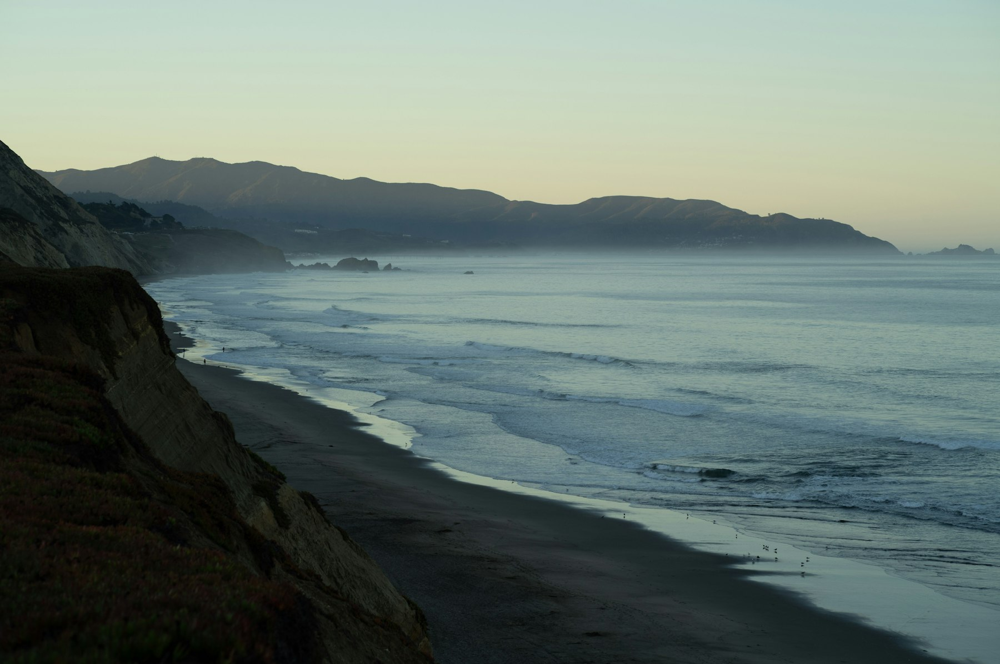
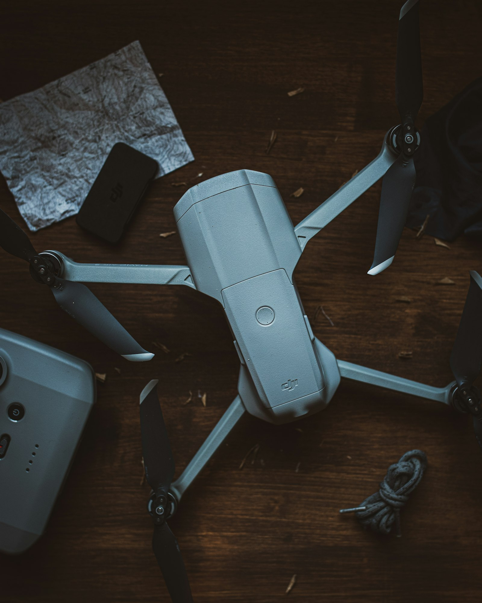

TFG · UC3M · Proyecto sin ánimo de lucro
Hola! Soy Nerea, estudiante de Ingeniería de Telecomunicaciones en la UC3M. Este es mi Trabajo de Fin de Grado: un proyecto de investigación académico y sin ánimo de lucro que estoy desarrollando desde cero, centrado en el uso de drones e inteligencia artificial aplicados a la búsqueda y rescate.
Es un reto ambicioso, y hacerlo sola se complica mucho más, tanto por la necesidad de tener un amplio numero de datos para entrenar la IA en el dron, como por el material necesario. Por eso nace esta web, para compartir el proyecto y abrir la puerta a quienes quieran colaborar y contribuir al mismo.
TFG · Proyecto académico sin ánimo de lucro
Drone‑SAR es un dron autónomo que detecta personas desde el aire en tiempo real y avisa con su posición exacta — pensado para operaciones de búsqueda y rescate. Lo estoy construyendo desde cero: el propio dron, la inteligencia artificial de detección y toda la infraestructura que lo conecta con la nube.
Todo el material es fácilmente accesible y está disponible en tiendas, huyendo de soluciones propietarias y cerradas que solo encarecen el proyecto. Para la IA uso software libre y gratuito — OpenCV y YOLO — sin licencias ni cajas negras.
Además, se trata de un proyecto 100% abierto. Puedes encontrar todo el código y esquemas en mi página en GitHub, así como la guía paso a paso y la documentación detallada en la página web del proyecto, quedando a disposición de cualquiera que quiera construir su propio dron, reutilizar la tecnología o mejorarla.
Ver el proyecto en detalleActualizado día a día
Cada avance, cada obstáculo y cada decisión técnica, contados según van pasando.
Cómo puedes ayudar
Tanto si eres un particular, como un aficionado a los drones, o incluso, como empresa, puedes ayudarme de formas muy variadas, desde difundir mi proyecto, a colaborar con fotos y videos que tengas, con material que ya no uses, o incluso con un mecenazgo (crowdfunding ).

¿Cómo puedes colaborar con tus grabaciones?
Necesito tomas aéreas con personas reales en entornos naturales o abiertos (monte, mar, descampados), grabadas desde distintas alturas y perspectivas. El objetivo es entrenar a la IA para que aprenda a diferenciar con rapidez a las personas frente a rocas, vegetación u otros elementos del terreno.
Vídeo de ejemplo: Ver demo en YouTube(toma grabada desde dron y procesada posteriormente por el modelo de visión artificial para la detección de personas)
Si dispones de un dron y puedes grabar videos similares, por favor, envíamelas — me ayudarías enormemente a seguir entrenando y optimizando el modelo.
Enviar vídeos
Al tratarse de una iniciativa académica y contar con presupuesto de estudiante, los recursos son bastante limitados. Para avanzar necesito bastante material: hacer pruebas, comparar alternativas, cubrir seguros, licencias, servicios cloud, desplazamientos y los inevitables repuestos para los «accidentes» del dron durante los tests.
Por eso busco colaboradores y patrocinadores que me echen una mano con el material (hélices, baterías, controladoras, sensores...), ya sea donando componentes que tengas por casa y no uses o mediante una pequeña aportación económica. Por supuesto, todo el material y las donaciones recibidas se publicarán de forma totalmente transparente en un apartado especial de la web.
Quiero patrocinar¿Tienes otra idea para ayudar? Escríbeme, toda ayuda cuenta.